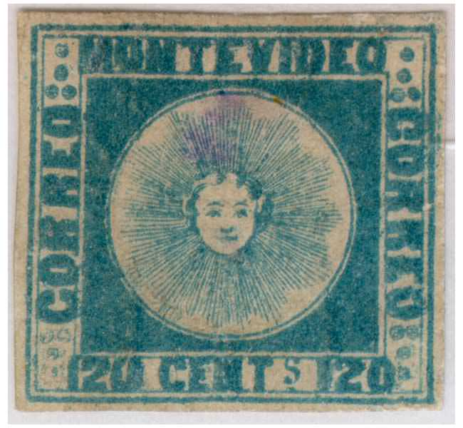
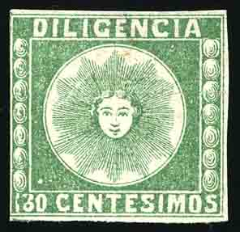
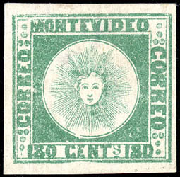
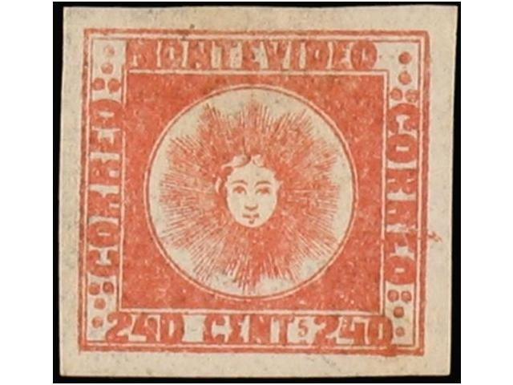

{kind=link}



Return To Catalogue - Uruguay 1858 'Sun' issue, forgeries, part 1 - Uruguay 1858 'Sun' issue, forgeries by Fournier and Sperati - Uruguay 1856 Diligencia issue - Uruguay 1859 'Sun' issue - Uruguay 1877-1920
Note: on my website many of the
pictures can not be seen! They are of course present in the
catalogue;
contact me if you want to purchase it.
120 c blue 180 c green 240 c red
These stamps were issued to be used on letters to Buenos Aires.
Value of the stamps |
|||
vc = very common c = common * = not so common ** = uncommon |
*** = very uncommon R = rare RR = very rare RRR = extremely rare |
||
| Value | Unused | Used | Remarks |
| 120 c | RRR | RRR | |
| 180 c | RRR | RRR | Error 180 c red: RRR (there is some doubt about the status of this error) |
| 240 c | RR | RRR | Also issued in red-brown |
Non-issued stamp:

A non-issued stamp in the 'sun-design', since the text
'DILIGENCIA' was not appropriate. These stamps were later
re-issued with the text 'MONTEVIDEO' and 'CORREO' at both sides.
A 240 c red was also prepared in the same design.


A typical elliptic cancel 'ADMon DE CORREOS MONTEVIDEO' with the
date inside the ellipse. Two types of this cancel exist, with
double ellipse (the second ellipse between the date and the outer
text) and with a single ellipse.

Cancel 'ADMon DE CORREOS MONTEVIDEO' with double ellipse.

Typical cancel (on a stamp of the next issue), consisting of two
staggered ellipses, 'ADMon DE CORREOS' on top, 'REP O DEL URUG'
below and city name 'ARRENDONDO'. Arrendondo is nowadays called
Rio Branca. This was the only town that used this cancel on this
issue(?). Note that forgeries exist with a wrong townname
ARREGONDO ('G' instead of 'D'), also with 'BRUG' instead of
'URUG'.
Types:
There are 30 transfer types for each value (printed in sheet of 5 rows of 6 stamps), except the 240 c, which was printed in sheets of 29 stamps (the position in 5th position in row 4 was left empty).
Probably subtype 7 (break in frameline under left '0' of '120').


Types 10 and 11 of the 120 c value.

Subtype 18 with break in the lower frameline below the left
'120'.

Probably subtype 21 (note the breaks and dots in the upper and
lower framelines).


Probably type 7 of the 240 c value. And position 8 (dot outside
the design upper left, line in 'M' of 'MONTEVIDEO').

Type 11? With line below the left '2'.

Four 240 c stamps, types 17, 22, 24 and 29 with the 'hole in the
sheet' in the middle, where an erroneous 180 c value was removed
(type 23).

Probably position 26, damaged lower frameline.

Probably type 30, with smudge below the '0' of the right '240'.
{kind=link}
{kind=link}